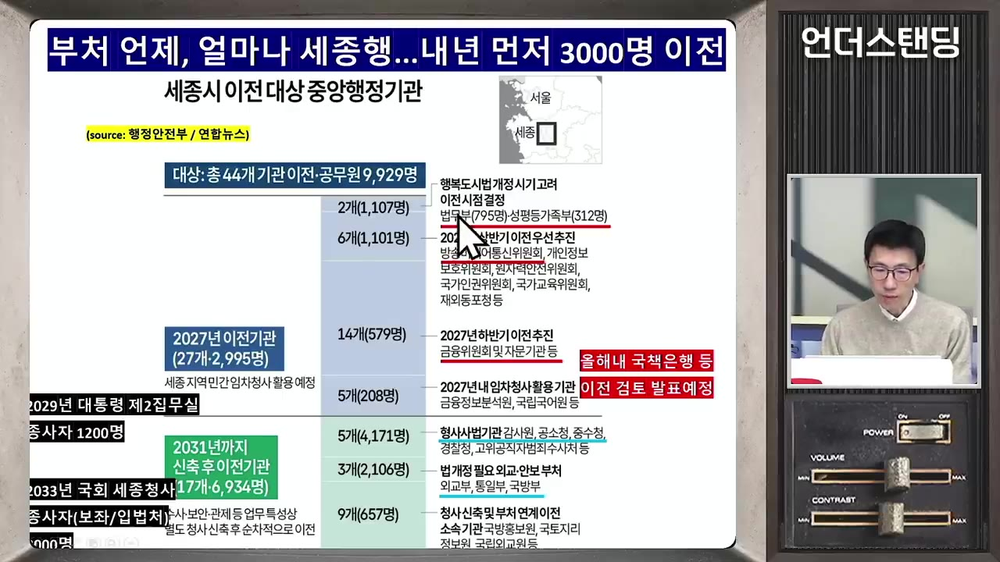
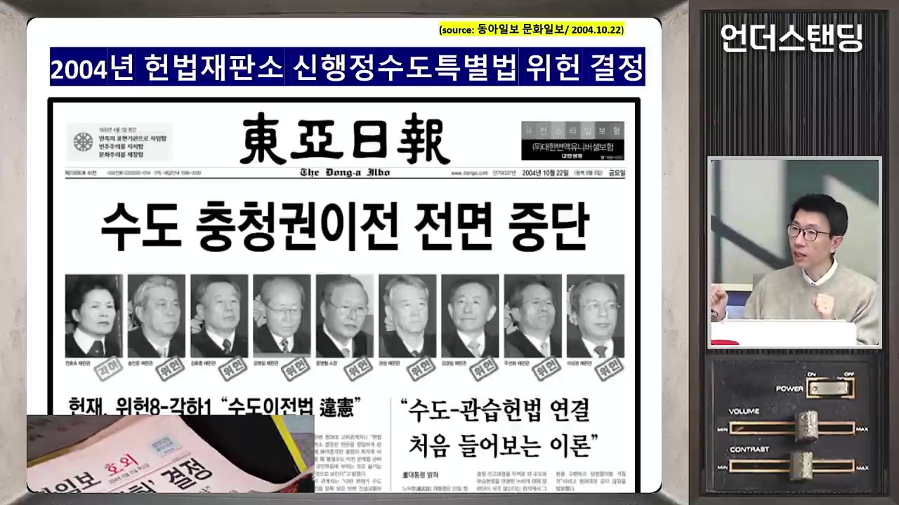
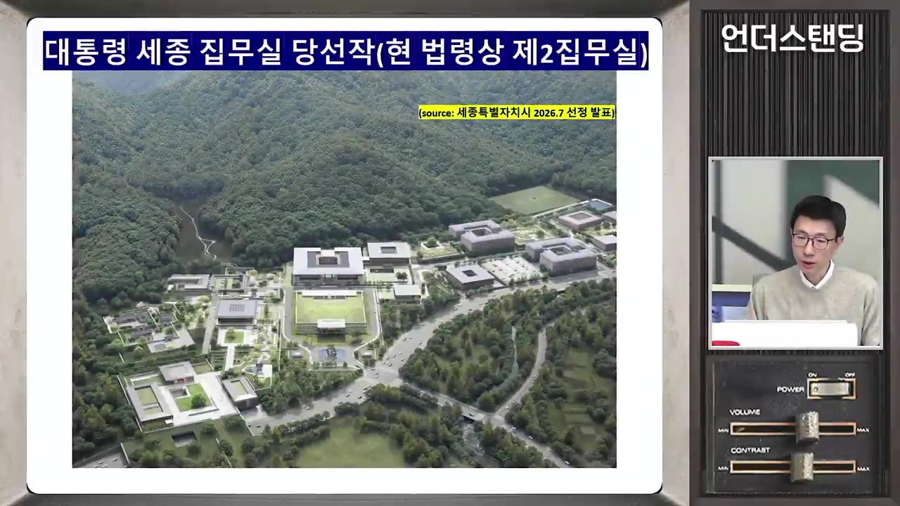
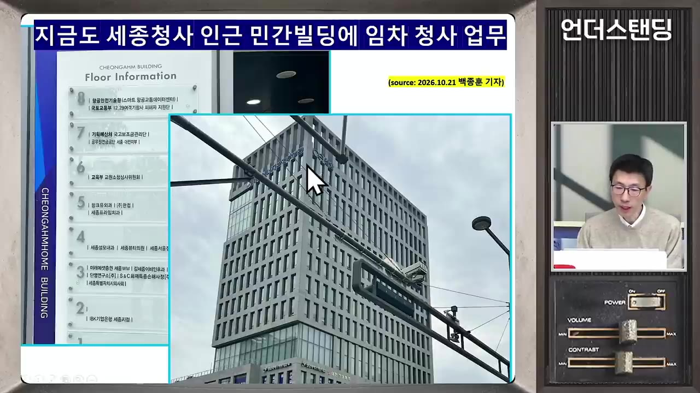
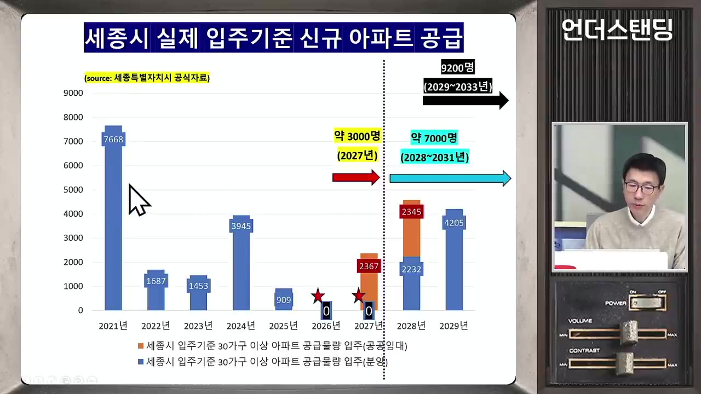
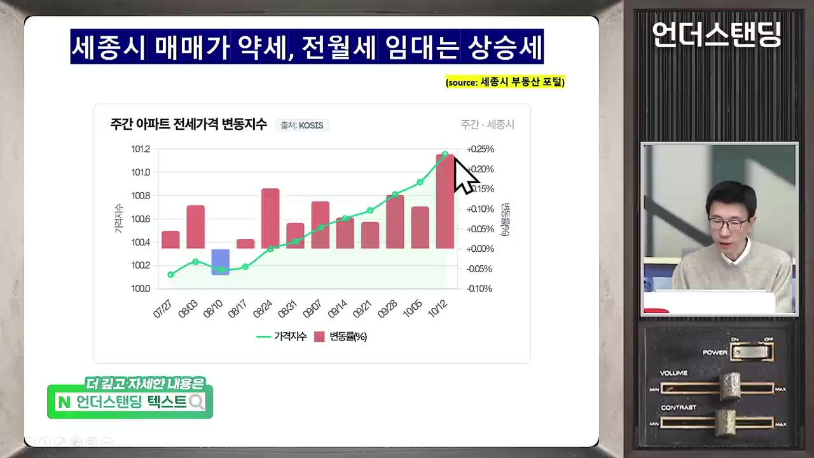
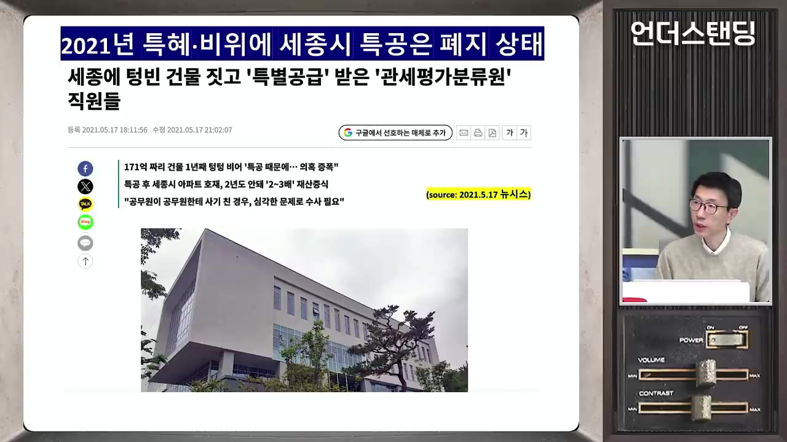

전월세 대란 온다 공무원 2만명 대이동...정작 대통령 집무실 완전이전은 안되는 이유 (언더스탠딩 백종훈 기자)
▶ 원본 영상 보기한눈에 보기
- 정부가 법무부·금융위원회 등 44개 기관, 공무원 약 1만 명을 2031년까지 세종으로 옮긴다. 2029년 대통령 제2집무실(1,200명)과 2033년 국회 세종의사당(8,000명)을 더하면 약 1만 9,200명이 내려간다.
- 대통령실과 국회는 완전히 옮기지 않고 '분원'으로 간다. 2004년 헌법재판소가 "서울이 수도라는 것은 관습헌법"이라고 결정했기 때문이다. 여당은 특별법을 만든 뒤 헌법재판소의 판단을 다시 받아 보려 한다.
- 세종 집값은 매매는 약하고 전월세는 강하다. 공무원 대부분이 가족은 서울에 두고 혼자 내려올 것으로 보여 중소형 임대 수요가 커질 전망이다.
- 공무원노조는 주택 특별공급(특공) 부활을 요구한다. 하지만 2021년 관세평가분류원 사건으로 폐지된 제도라 국토교통부는 아직 검토 중이다.
- 1차 이전 뒤 14년이 지났지만 정주 효과를 확인한 보고서는 없다. 혼자 내려와 주말마다 서울로 올라가는 구조라면 균형발전 효과가 작을 수 있다.
이런 분께 도움이 됩니다
- 세종 이전 대상 부처의 공무원과 가족: 이전 일정, 주거 여건, 특공 논의 상황을 한 번에 볼 수 있다.
- 세종·과천 부동산 매매나 임대를 고민하는 분: 매매와 전월세가 왜 다르게 움직이는지 알 수 있다.
- 행정수도 논쟁의 헌법 쟁점을 짧게 이해하고 싶은 분.
핵심 내용
이전 규모와 일정: 약 2만 명, 1차 이전보다 많다
- 10월 13일 발표 내용은 아직 세종에 가지 않은 중앙행정기관 44곳, 공무원 약 1만 명을 옮기는 것이다. 내년에 약 3천 명, 2031년까지 나머지가 내려간다. (1:14)
- 목적은 두 가지다.
- ① 수도권 과밀 해소와 국가균형발전
- ② 서울·과천·세종으로 나뉜 중앙부처를 세종 중심으로 모아 행정 효율을 높이는 것
- 대통령 제2집무실(약 1,200명, 경호 인력 포함)과 국회 세종의사당(약 8,000명, 보좌진·예산정책처 등)까지 더하면 약 1만 9,200명이다. 2012년쯤 시작된 1차 이전 인원은 약 1만 5천 명이었다. (3:48)
- 감호·구금 시설이 필요한 수사기관은 새 청사를 지어야 해서 2차(2031년)로 미뤘다.
🔁 세종 이전 일정
- 1차 이전(내년)
- 대통령 제2집무실
- 2차 이전(~2031)
- 국회 세종의사당
- 11차 이전(내년)
약 3천 명. 법무부(가장 큼), 방송미디어통신위원회, 금융위원회 (2:46)

세종시 이전대상 중앙행정기관 표: 총 44개 기관, 공무원 9,929명 · ▶ 2:50 - 2대통령 제2집무실
2029년 8~9월쯤 개관 목표, 종사자 약 1,200명
- 32차 이전(~2031)
외교·통일·국방, 경찰청, 공소청·중대범죄수사청, 공수처(고위공직자범죄수사처) 등 청사가 필요한 기관
- 4국회 세종의사당
2033년 개원, 약 8,000명
💡 5~6년 안에 1차 이전 때보다 더 많은 인원이 세종으로 간다.
대통령실·국회가 '분원'인 이유: 2004년 관습헌법 결정
- 2004년 헌법재판소는 "수도는 대통령실과 국회가 있는 곳"이라고 보았다. 서울이 수도라는 것은 헌법 조문에는 없지만 관습헌법이라고 결정했다. 그래서 두 기관을 완전히 옮기면 이 결정에 정면으로 어긋난다. (5:00)

- 완전 이전을 하려면 두 가지 방법이 있다.
- 헌법 개정(국회 통과 + 국민투표)
- 특별법으로 옮긴 뒤 헌법재판소의 판단을 다시 받는 것. 여당은 이 방법으로 기울어 특별법을 상임위원회에 올려 둔 상태다.
- 헌법학자들에 따르면 같은 사안으로 헌법재판소 판단을 다시 받는 것은 가능하다. 다만 헌법재판소가 예전 결정을 뒤집으려면 매우 정교한 논리가 필요하다. (6:57)
- 야당은 이미 성명을 내 반대하고 있어 소송은 바로 나올 것으로 보인다. 큰 정치 싸움이 될 전망이다. 법으로만 정하면 다음 정권이 법을 고쳐 되돌릴 수 있다.
🔁 여당이 구상하는 완전 이전 경로
- 특별법 제정
- 야당 소송
- 헌재 재판단
- 기정사실화
- 1특별법 제정
대통령실·국회 이전 법안을 상임위원회에 올림
- 2야당 소송
헌법소원 등으로 문제 제기 예상
- 3헌재 재판단
2004년 결정을 바꿀지 다시 판단받음
- 4기정사실화
2029년 제2집무실을 실제로 운영해 국민에게 보여 주는 전략
세종 대통령 제2집무실 설계
- 최근 설계 공모 당선작이 나왔다. 전통 처마의 선을 살리되 직선과 유리를 많이 쓴 현대식 설계이고, 예전 청와대보다 크다는 평이다. (9:03)

- 기본 건설비는 2천억 원대 초반이고, 기반시설까지 넓히면 3천억 원까지 들 수 있다. 2029년 하반기 완공 예정이다. (자막에는 '2,억', '3,억'으로 나와 정확한 숫자는 불분명하며, 문맥상 2천억·3천억 원으로 읽었다.)
- 2천억 원 넘게 들여 지은 집무실을 대통령이 너무 자주 쓰면 "사실상 본원 아니냐"는 위헌 논란이 생긴다. 너무 안 써도 예산 낭비라는 비판을 받는다.
사무실은 해결 가능, 문제는 '집'
- 세종청사는 이미 꽉 차 있다. 기후부, 기획예산처 국고보조금 관리 부서, 교육부 소청심사위원회, 국토부 일부가 민간 건물을 빌려 쓰고 있다. (11:29)

- 반면 세종의 상가 공실률은 약 23%로, 17개 시도 가운데 가장 높다. 주말 장사가 안 되기 때문이다. 그래서 민간 사무실을 빌리는 데는 큰 문제가 없다.
- 가장 큰 문제는 공무원이 살 집이다. "올해·내년 세종 입주 물량이 0이라 전월세 구하기 어렵다"는 기사가 많이 나왔다. (12:36)
주택 공급: '입주 물량 0'은 반만 맞다
- 세종은 처음에 주택 20만 호를 계획했다. 14년 동안 약 65%(13만 5천~13만 6천 호)를 지었고, 택지에는 약 6만 5천 호를 더 지을 여력이 있다.
- 2019~2020년에는 연간 거의 1만 호가 들어섰다. 금리가 급등하던 시기에 착공을 미루면서 올해와 내년 입주 물량(30가구 이상 아파트)은 0이 됐다. (14:02)

- 세종시와 행정중심복합도시건설청(행복청)은 이렇게 반박한다. 내년 8월 충청권 하계 유니버시아드 대회의 세종 선수촌 2,300세대를 대회가 끝난 뒤 리모델링해 내년 말 공공임대로 공급한다는 것이다. 국토부와 한국부동산원이 발표할 때 이 물량을 빠뜨려 기자들이 놓쳤다는 설명이다. (14:52)
- 2028년부터는 공무원연금공단 공공임대와 민간 물량을 합쳐 연 4,000호 안팎이 공급된다. 세종시와 행복청은 인허가 기간을 줄여 연 1만 호까지 늘리겠다고 기자회견을 하고 있다.
- 주변 공주·청주·오송 등에서 차로 15분이면 세종 어디든 갈 수 있다. 세종에 쌓인 매매 매물도 꽤 많다는 의견이 나왔다.
시세: 매매는 약세, 전월세는 강세
| 구분 | 흐름 | 이유·예시 |
|---|---|---|
| 매매 | 약세 | 2018~19년 공급이 많았고, 2021년 이후 금리 상승기 하락률 전국 1위. 정부청사 북쪽 도담동 84㎡ 실거래가 약 5억 원 |
| 전세 | 강세 | 호수공원 남쪽 84㎡ 전세 약 2억 5천만 원(전세가율 약 50%). KB 전세수급지수와 세종시 부동산 포털의 전세가격 변동지수가 가파르게 오름 |
- 세종 중개업소 반응: 10월 13일 발표 뒤 집주인들이 매도 매물을 거둬들였다. 다만 쌓인 매도 수요가 많아 매매가 크게 반응하지는 않을 것으로 본다. (18:46)
- 중소형 임대 수요는 더 강해질 전망이다. 국장·과장급 대부분이 처음 몇 년은 가족을 서울에 두고 혼자 내려와 버티기 때문이다. (19:15)
- 공무원연금공단 임대는 59㎡(약 24평)가 전세 약 1억 4천만 원이다. 전세금을 8천만 원으로 낮추면 월세 20~30만 원으로 돌릴 수 있다. 저렴하지만 단지가 많지 않다. 그 밖에는 원룸이 대안이다. (31:50)

💡 가족은 서울, 본인만 세종에 사는 구조라서 전월세, 그중에서도 중소형만 강하다.
특별공급(특공) 부활 논쟁
- 공무원노조는 이전이 피할 수 없는 흐름이라면 주택 대책으로 특공을 달라고 요구한다. 세종시와 행복청도 "특공을 줘야 가족과 함께 정착한다"며 찬성한다.
- 걸림돌은 2021년 관세평가분류원(관세청 산하, 관세 품목 분류 기관) 사건이다. (22:16)
- 그 뒤 특공을 받을 수 있는 조건이 무주택자로 강화됐고, 이후 제도가 아예 폐지됐다.
- 다시 살리려면 국토교통부령 「주택 공급에 관한 규칙」 제47조에 삭제된 규정을 다시 넣어야 한다. 국토부는 여론이 부담스러워 "검토 중"이라는 입장이다. (25:43)
🔁 관세평가분류원 특공 사건
- 무단 청사 신축
- 직원 특공 신청
- 빈 청사 적발
- 특공 폐지
- 1무단 청사 신축
세종 이전 대상으로 고시되지 않았는데 170억 원 예산으로 4층 청사를 지음. 행안부와 기재부도 걸러내지 못함
- 2직원 특공 신청
직원 거의 모두가 특공을 신청. 당시 약 2억 원에 받아 5억 원에 팔 수 있던 시기

'세종에 텅빈 건물 짓고 특별공급 받은 관세평가분류원' 기사 · ▶ 22:20 - 3빈 청사 적발
2021년 야당이 문제를 제기했고, 기자들이 전기·가스 계량기를 확인해 보니 사용량이 거의 0. 수사와 기소로 이어짐
- 4특공 폐지
다른 이전 공무원들까지 특공을 잃음. 건물은 기재부가 회수해 고용노동부 산하 기관에 넘김
💡 필요성은 인정되지만, 집값 급등기에 생긴 '특혜' 이미지 때문에 부활이 쉽지 않다.
과천·국책은행 등 남는 곳의 걱정
- 과천청사에서 법무부, 방송미디어통신위원회, 방위사업청이라는 큰 기관 세 곳이 빠진다. 과천시장은 1인 시위로 반대하며 다른 공공기관이라도 입주시켜 달라고 요구한다. (28:02)
- 13일 발표에서 빠진 예외 기관은 경찰병원, 국립국악원·도서관 등(자막상 이름 일부 불분명), 대법원, 헌법재판소, 중앙선거관리위원회다. 사법부 쪽은 행정부가 통제하기 어렵기 때문이다.
- 출연진은 수사기관은 세종으로 가는데 법원은 서울에 남아, 재판 때문에 서울을 자주 오가야 하는 모순을 지적했다.
- 세종청사 안에서도 위치가 곧 힘이다. 나중에 지은 중앙동에 기획예산처와 행안부가 들어갔다. 청사 끝에서 끝까지 가려면 약 40분이 걸린다. (30:02)
- 국책은행 직원들도 부산 이전 검토 가능성 때문에 걱정하고 있다.
균형발전 효과는 검증된 적이 없다
- 1차 이전 뒤 14년이 지났지만 정주 인원이나 경제 효과를 분석한 보고서·용역은 없다는 것이 정부 답변이다. (20:47)
- 공무원은 낮에는 청사에 있고 가족은 서울에 있으며 주말에는 서울로 올라간다. 금요일이면 서울행 버스가 줄을 선다. 그래서 상가가 살아나지 않는다.
- 예전에 있던 서울~세종 통근버스는 "그러니까 안 내려오는 것 아니냐"는 비판 속에 거의 없어졌다.
- 출연진의 의견: 주거비를 지원하면 "혼자 내려와도 된다"는 신호가 될 수 있다. 이전은 공무원이라는 직업이 받아들여야 할 몫이지만, 정착할지 임시 숙소에 살지는 본인이 선택하고 비용도 본인이 져야 한다는 시각이다. (34:09)
기억할 숫자·인용
- 44개 기관, 약 1만 명(내년 약 3천 명, 2031년까지 나머지) + 대통령 제2집무실 1,200명(2029년) + 국회 세종의사당 8,000명(2033년) = 약 1만 9,200명
- 1차 이전 공무원 약 1만 5천 명
- 세종 상가 공실률 약 23%(17개 시도 중 최고)
- 주택 계획 20만 호 중 약 65% 건설, 남은 여력 약 6만 5천 호
- 유니버시아드 선수촌 2,300세대가 내년 말 공공임대로 전환
- 도담동 84㎡ 매매 약 5억 원 / 남쪽 84㎡ 전세 약 2억 5천만 원
- 공무원연금공단 임대 59㎡ 전세 1억 4천만 원 또는 8천만 원 + 월 20~30만 원
- 관세평가분류원 청사 170억 원, 특공 당시 약 2억 원에 받아 5억 원에 매도
- 2004년 헌법재판소: "서울이 수도라는 것은 관습헌법"
생각해볼 점
- 선수촌 공급은 한 번뿐이다(내 의견). 선수촌 2,300세대가 들어와도 내년 3천 명에 국회·대통령실 인력까지 생각하면 2027~2028년 사이의 공백은 남는다. 연 1만 호 공급은 아직 행복청의 계획일 뿐이다.
- 특공과 정주 효과의 관계는 따져 봐야 한다. 특공이 있던 1차 이전 때도 정주 효과를 보여 주는 자료는 없었다. 특공이 정착을 이끄는지, 시세 차익만 남기는지 근거가 필요하다.
- 부동산 전망은 출연진과 중개업소의 견해다. "매매 약세, 전월세 강세" 전망은 특별법과 헌재 결과, 정권 교체 같은 정치 변수에 따라 크게 바뀔 수 있다.
바로 해볼 일
- 이전 대상 공무원이라면 공무원연금공단 세종 임대주택 공급 공고와 신청 조건을 확인한다.
- 세종 임대 투자를 고민한다면 KB 전세수급지수와 유니버시아드 선수촌 임대 전환 일정을 확인한다.
- 대통령실·국회 이전 특별법이 상임위에서 어떻게 처리되는지와 국토부의 「주택 공급에 관한 규칙」 제47조 개정 여부를 지켜본다.